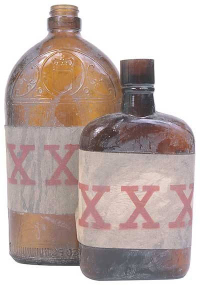

Paracelsus, the father of toxicology (1493-1541), said, "Everything is poison, there is poison in everything. Only the dose makes a thing not a poison". Deaths due to poisonings do not always involve the consumption of a true poison. Rather, they may also be caused by the accidental or intentional overdose of a substance that is not even considered poison (such as Aspirin®, alcohol, or household cleaners).
The actual number of poisonings in North America is unknown because not all cases of poisonings are detected or reported. Approximately 2 million cases are reported voluntarily to poison control centers each year. About 700 deaths by poisoning are reported in North America each year. Children less than 6 years of age account for the majority of reported poisonings, most of which are accidental ingestion of household cleaners. In contrast, adults account for the majority of deaths by poisoning, most of which are intentional suicides rather than accidental or intentional poisonings.
Notice in lists below that the type of poisons most frequently reported are not the same as the types of poisons most frequently causing death. The majority of reported poisonings are accidental overdoses that do not necessarily cause death. For example, a small child drinks some window cleaner left in his or her reach. Poisonings causing death are due to accidental overdoses or intentional suicides. Most suicides involve intentional overdoses of pain relievers (such as Aspirin® or Tylenol®), antidepressant drugs, or carbon monoxide. Other deaths due to poisons are ordinarily the result of accidental overdoses.
Most Frequent Causes of Reported Poisonings:
Most Frequent Causes of Death by Poisoning:
Homicides due to intentional poisonings are rare. Estimates indicate only 1% or less of all homicides are the result of poisoning. Two possible reasons for this are